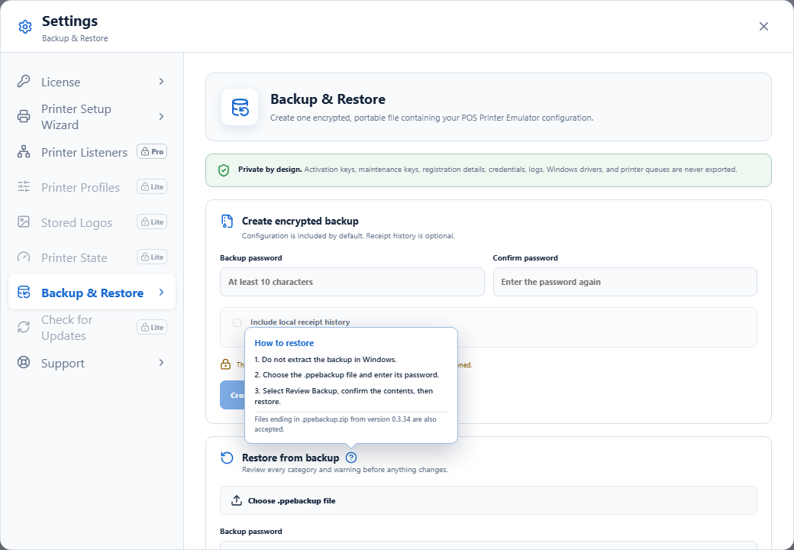
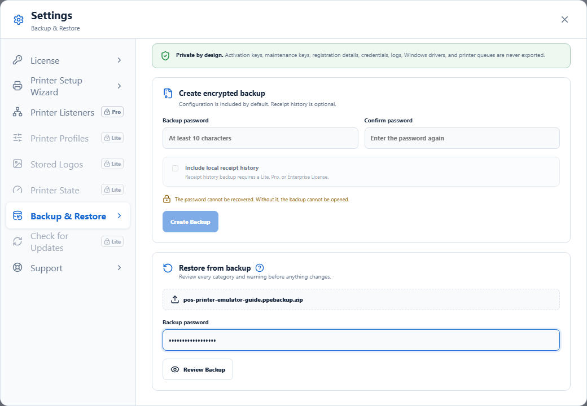
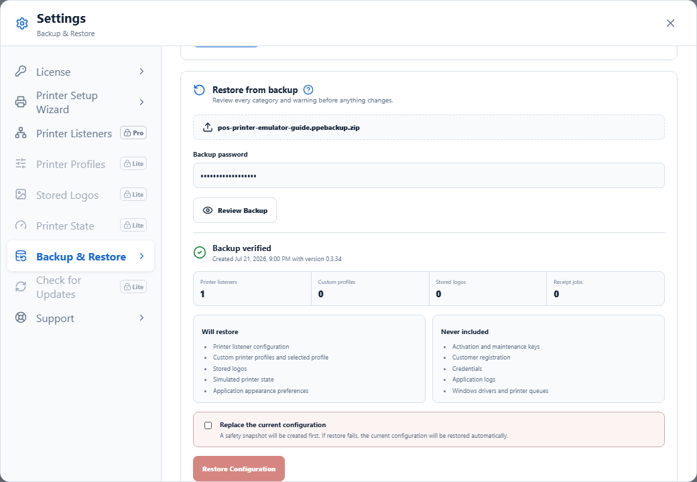
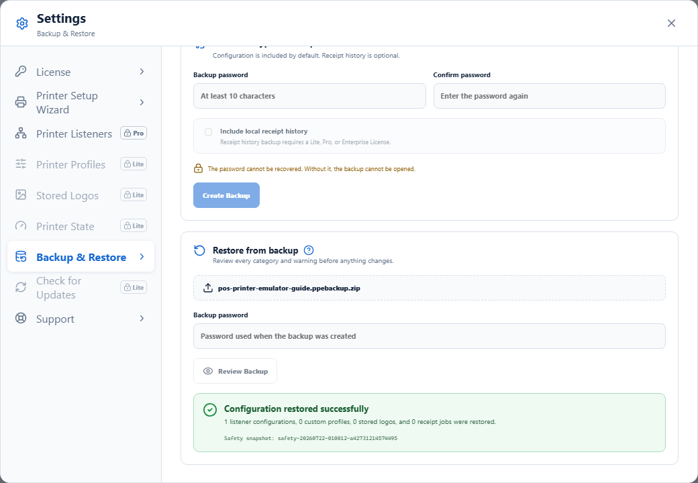

Important: a .ppebackup file is an encrypted POS Printer Emulator backup—not a normal ZIP archive. Do not use Windows Extract Compressed. Restore it from inside the application.
Create a backup
Open Settings → Backup & Restore. Enter the same password twice, optionally include local receipt history when your license permits it, and select Create Backup. Save the password separately because it cannot be recovered.
Restore a backup
1Open the restore help
Open Settings → Backup & Restore. Hover over or focus the small question-mark icon beside Restore from backup to see the instructions without leaving the application.

2Choose the backup and enter its password
Select Choose .ppebackup file, choose your backup, enter the password used when it was created, and select Review Backup.
Files saved by version 0.3.34 may have this name:
pos-printer-emulator-20260722T003102.ppebackup.zip
The application accepts that legacy name. If an older installation does not show the file, rename it by removing only the final .zip. Do not extract or modify its contents.

3Review before restoring
Confirm the creation date, application version, included categories, item counts, exclusions, and any compatibility warnings. Activation keys, registration details, credentials, logs, Windows printer queues, and Epson driver files are never restored from the package.

4Confirm and restore
Select Replace the current configuration, then select Restore Configuration. The application creates a Windows-protected safety snapshot first and automatically rolls back if restoration fails.

Common questions
- Windows says the ZIP folder is empty: close the extraction wizard. The encrypted backup is not a ZIP file.
- The password is rejected: enter the exact password used when creating the backup. It cannot be reset or recovered.
- The backup came from a higher license tier: all listener definitions remain preserved, but only the number permitted by the active license can run.
- The backup was created by a newer version: install the latest available update before restoring when possible.